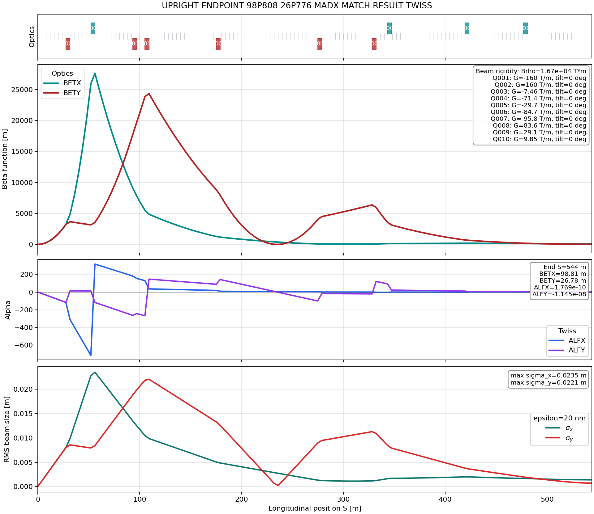

Upright Round-to-Flat Endpoint Retarget Summary
This design starts from the current best aperture keeper,
upright_peak_reduced_10q_matched, and retargets only the endpoint Twiss values to
BETX = 98.80798387931307 m and BETY = 26.775980892186183 m.
The rematch used MAD-X MATCH with four quadrupole knobs, preserving the 10-quadrupole layout and
the section length. The previous keeper files were not overwritten.
Method
The match varied q005, q006, q008, and q010 with a
160 T/m absolute gradient cap. Endpoint constraints were applied to BETX,
BETY, ALFX, and ALFY. A reproducible MAD-X match deck and a static
baked-strength result deck were both saved.
Validation
| Check | Value |
|---|---|
| MAD-X MATCH final penalty | 9.15725072e-15 |
| MAD-X warnings | 0 |
| Length | 543.995489 m |
| Maximum gradient | 160.000000 T/m |
| Assumed emittance for beam size | 20 nm geometric RMS |
Endpoint Comparison
| Design | BETX [m] | BETY [m] | ALFX | ALFY | Max RMS Size [m] |
|---|---|---|---|---|---|
| Previous keeper | 80.00000723 | 30.00002539 | -1.447878e-05 | -1.083923e-04 | 0.0235082355 |
| Retargeted design | 98.80798386 | 26.77598088 | 1.768524e-10 | -1.145193e-08 | 0.0235082355 |
Peak Envelope
| Design | Max BETX [m] | Max BETY [m] | Max sigma-x [m] | Max sigma-y [m] |
|---|---|---|---|---|
| Previous keeper | 27631.85681 | 24349.69224 | 0.0235082355 | 0.0220679370 |
| Retargeted design | 27631.85681 | 24349.69224 | 0.0235082355 | 0.0220679370 |
The peak beam envelope is unchanged because the retarget was achieved with downstream optics knobs that do not alter the existing peak-beta locations.
Quadrupole Gradients
| Quadrupole | Previous [T/m] | Retargeted [T/m] | Change [T/m] |
|---|---|---|---|
q001 | -159.595527 | -159.595527 | 0.000000 |
q002 | 160.000000 | 160.000000 | 0.000000 |
q003 | -7.461257 | -7.461257 | 0.000000 |
q004 | -71.424403 | -71.424403 | 0.000000 |
q005 | -29.817764 | -29.677609 | +0.140155 |
q006 | -85.161491 | -84.682100 | +0.479391 |
q007 | -95.767675 | -95.767675 | 0.000000 |
q008 | 84.415826 | 83.626856 | -0.788970 |
q009 | 29.082610 | 29.082610 | 0.000000 |
q010 | 15.012174 | 9.848857 | -5.163317 |
Generated Files
| File | Purpose |
|---|---|
upright_endpoint_98p808_26p776_madx_match.madx | Reproducible MAD-X MATCH deck. |
upright_endpoint_98p808_26p776_madx_match.log | MAD-X MATCH log with final penalty and matched knobs. |
upright_endpoint_98p808_26p776_madx_match_result.madx | Static deck with matched strengths baked in. |
upright_endpoint_98p808_26p776_madx_match_result_twiss.tfs | TWISS table for the static result. |
upright_endpoint_98p808_26p776_madx_match_result_plot.png | Plot with survey, beta, alpha, RMS beam size, and strength annotations. |
Plot
